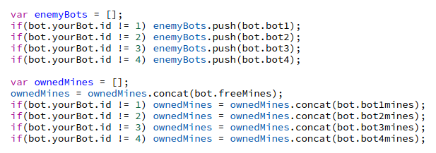

What is Vindinium? |
| Vindinium is an AI (Artificial Intelligence) programming challenge where people can code their own bot out of any programming language to compete and battle in the land of Vindinium. |
| Four bots are placed against eachother on random map and compete against eachother to gain the most gold in the round. |
| To start a game, each of the four individuals must queue in their terminal and wait for the others to queue themselves. Once everyone's bot is queued, the round starts with the bots spawned on a random map. |
| The bots must start by conquering mines from the goblins on the map and steal the opponent mines as well during the round. Each move by a bot is a turn. There are a total of 1200 turns per round. Every turn, each bot receives 1 gold per mine they own. |
| When a bot is adjacent a to another bot, one of the bots will either attack or run depending on their turn and how the bot is programmed. Bots cannot attack diaganolly. |
| When the bots have a low health, they can choose to go to one out of four taverns on the map to heal themselves. Healing costs two gold. |
| Once the turn reaches 1200, the game ends and the bot with who earned the most gold in the game wins and is displayed on the screen. |
My AI Bot |
| For Vindinium, I created my own bot to compete in the game. I programmed my bot to do multiple tasks including going to a tavern when its health is low, steal mines owned by other players, and attacking the players with the lowest health. We as a class used JavaScipt to program our bots. |
| Now, I am going to show a few parts of my code and explain what they do to create an understanding of how AI works. |
|  |
| This is the code for the set of arrays for all the enemy bots and the mines owned by the enemy bots. These arrays are used later in the functions. |
| This is the code for where my bot will go after the weakest player who has a health lower than 25. In the checkGoodTarget function, it is shown that the function will return true (run the function) if the health of an enemy bot is less than 25 or else it will return false (not run the function). The next if statemenet basically tells the bot where to go to find the bot that he needs to attack if the function is runned. Bot.findPath is used to find the path from myPos (my bot's position) to the x and y positions of the enemyBots[target]. |
| Above is one of the tasks I programmed my bot to do. This task tells my bot to go and heal at a tavern when its life is less than 61. The first if statement states that if my bot's health is at less than 61, the task is equal to nearest tavern. The next if statement is the one that does most of the work as it says that if the task is equal to the nearest tavern, the bot will "bot.findDistance" of the myPos to the nearestTavern. |
Mr. Hesby, please click here!